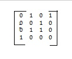
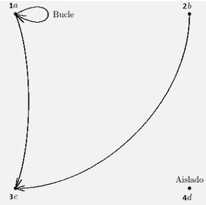

Es importante que, cuando relacionamos elementos de distintos conjuntos, podamos expresar esta
relación utilizando elementos gráficos o matrices.
Estas formas de expresar las relaciones tienen su mayor aplicación en el área de cómputo.
Una forma de explicar implícitamente una relación está en la siguiente expresión:
Dados los conjuntos E1, E2,..., En, la relación R sobre E1 × E2 ×· · ·×En es algún subconjunto
del producto cartesiano, es decir:
x X………..x
Donde:
1.- R es relación vacía si es igual a cero.
2.- R es relación universal, si es igual a x x………..x
3.- R es una relación n-aria sobre E si
Y si n es igual a 2, entonces R es una relación de tipo binaria y en caso de ser igual 3,
es una relación ternaria.
Matriz de Relación
Definición .-
Una matriz es un arreglo rectangular que representa la correspondencia, es decir la relación, que es R de A y B. Se representan los renglones con elementos de A y las columnas que etiquetan
los elementos de B.
Ejemplo 2.5.1:
1. R = {(5, f), (5, h), (6, g), (7, g), (7, f), (8, e)}
el orden respectivo es 5, 6, 7,8 y e, f, g, h se
obtiene la siguiente matriz:

Las columnas son las letras y los renglones son los números. Es decir, la columna 1
es la letra e; la columna 2, letra f; columna 3, letra g; columna 4, letra h. El renglón 1 es el número 5;
renglón 2, número 6; renglón 3, número 7; renglón 4, número 8.
Las columnas son las letras y los renglones son los números. Es decir, la columna 1 es
la letra e; la columna 2, letra f; columna 3, letra g; columna 4, letra h. El renglón
1 es el número 5; renglón 2, número 6; renglón 3, número 7; renglón 4, número 8.
Gráfo de una Relación
Definición .-
Los grafos permiten visualizar cuestiones relativas a una relación binaria, un grafo dirigido, también
conocido como dígrafo, es un par ordenado D = (A, R) donde A es un conjunto finito y R es una relación
binaria la cual es definida sobre A, y al conjunto de este, es decir, A, recibirá el nombre de conjunto
de vértices o nodos de D; y los elementos de R recibirán el nombre de aristas o arcos del dígrafo D.
Un grafo dirigido, representado como Gd, expresa una relación, es decir, si se conoce la relación,
por lo tanto se conoce el dígrafo y conociendo éste se puede asentar la relación.
Si un Gd de una relación es un conjunto finito A, entonces el dominio y la imagen de R están
formados por los puntos que son, respectivamente, extremo inicial y final de algún arco. Si los elementos de A son puntos del plano y cuando dos elementos equis (x) y ye (y) de A estén relacionados, es decir, x R y, se elaborará un arco dirigido desde x hasta y. A, x recibe el nombre de vértice inicial y la y, vértice final de la arista (x, y). A una arista que una un punto consigo mismo, y se nombrará bucle; y al vértice que no sea inicial ni final de ninguna arista, recibirá el nombre de aislado.
El número de aristas es el grado de entrada de un vértice y se representa como ge (a) al del
vértice a y el grado de salida de un vértice es el número de aristas que salen de él se representa como
gs (a) del vértice a.
Ejemplo 2.5.2:
En la siguiente figura se muestra la representación grafica del digrafo D = (A, R),
siendo A el conjunto {1a, 2b, 3c, 4d} y R = {(1a, 1a), (1a, 3c), (2b, 3c)}.

Las columnas son las letras y los renglones son los números. Es
decir, la columna 1 es la letra e; la columna 2, letra f; columna 3, letra g; columna 4, letra h. El renglón 1 es el número 5; renglón 2, número 6; renglón 3, número 7; renglón 4, número 8.
Las aristas son (1a, 1a), (1a, 3c) y (2b, 3c) y 4d es un vértice aislado.
Los grados de entrada son:
ge (1a) = 1, ge (2b) = 0, ge (3c) = 2, ge (4d) = 0
y los de salida,
gs (1a) = 2, gs (2b) = 1, gs (3c) = 0, gs (4d) = 0